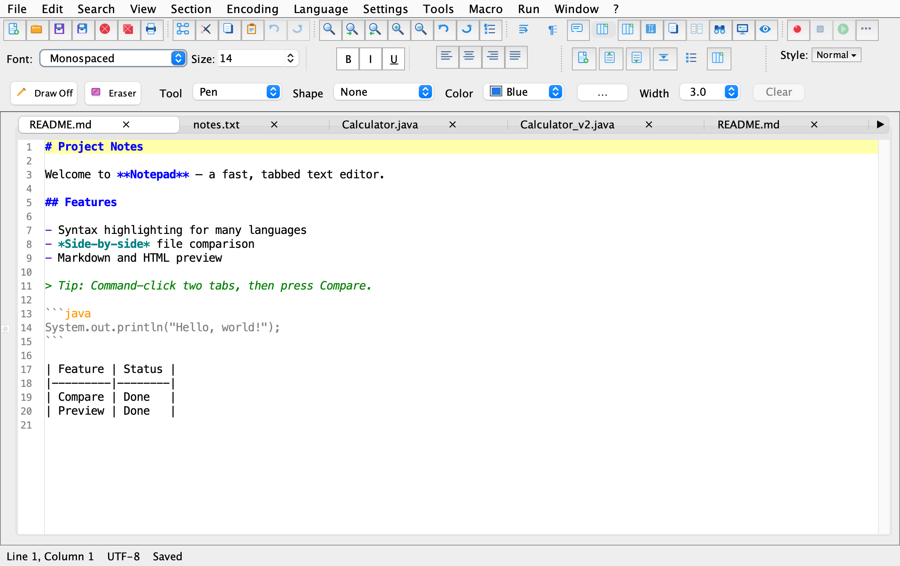
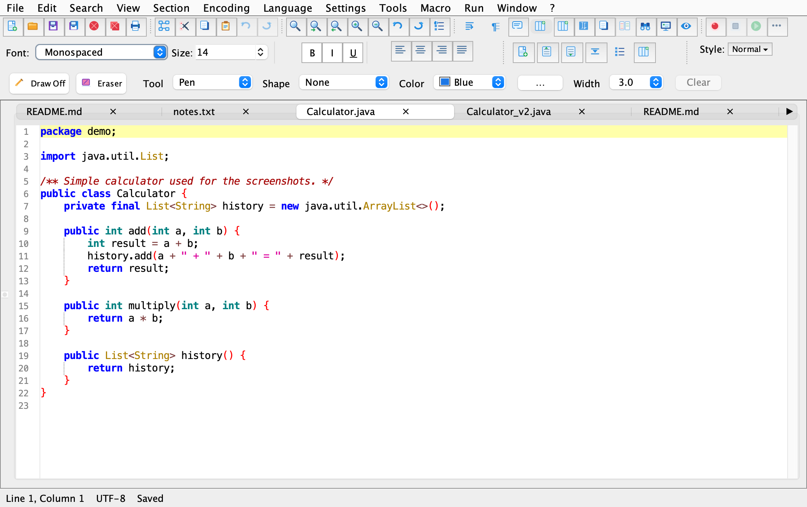
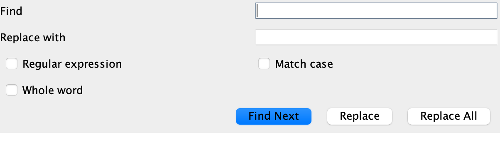
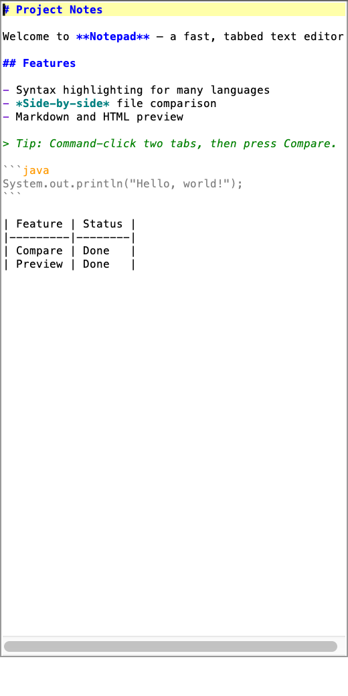
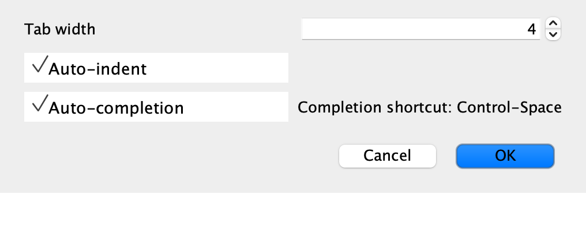
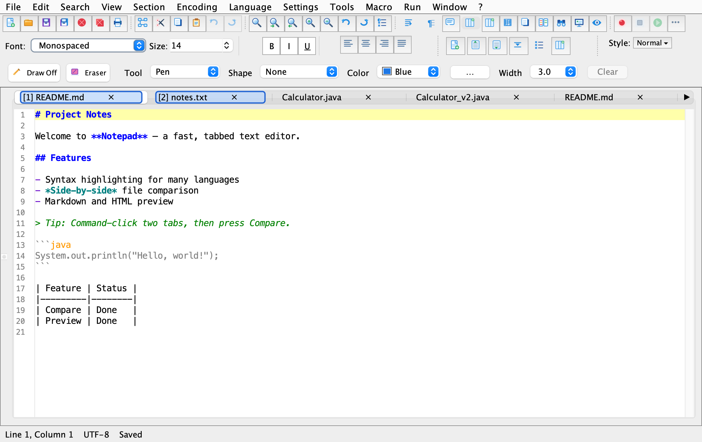
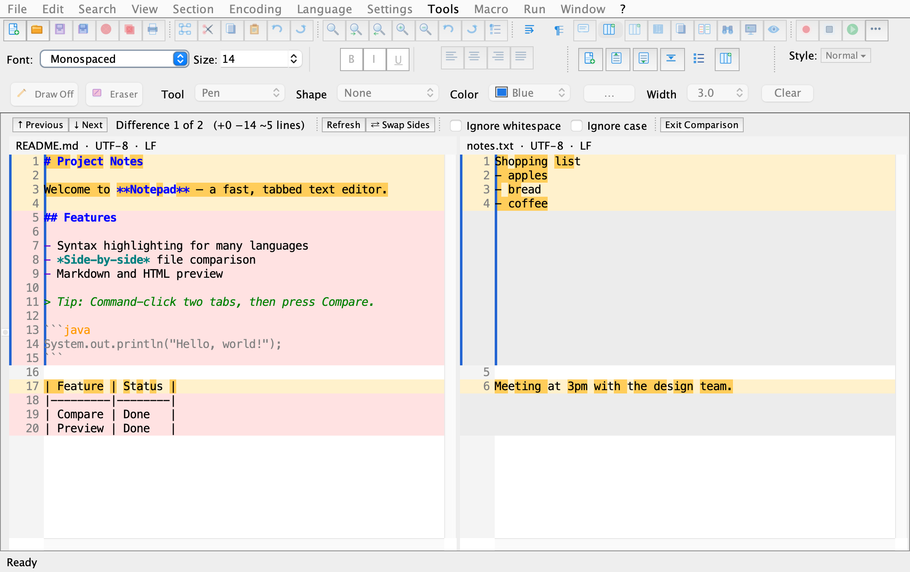
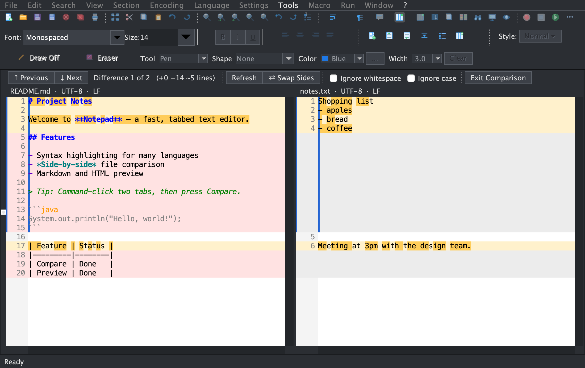
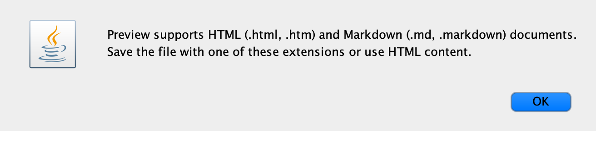

Write and code in one place
Work in plain text, Markdown, or code with syntax highlighting, line numbers, tabs, and the familiar editing tools you expect.
A versatile editor for macOS
From quick notes to code and Markdown, Notepad brings the tools you need into one clear, capable workspace.
Limited-time offer · $5.00, regularly $49.99 · No subscription

One editor. More possibilities.
Go from a blank page to a finished draft, then switch straight into your next task—without changing your tools.
Work in plain text, Markdown, or code with syntax highlighting, line numbers, tabs, and the familiar editing tools you expect.
Write with Markdown, preview the rendered result, and move between editing and reading as your document comes together.
View two documents side by side, navigate between differences, and keep the changes that matter in view.
Use search and replace, a document map, word count, and preferences to make larger writing and editing tasks easier to manage.
A closer look
Explore the editor, Markdown tools, file comparison, and the menus that bring it all together.










Limited-time offer
Get Notepad for macOS at $5.00, down from $49.99. Pay once—no monthly plan or subscription—and get the tools to write, edit, and get things done.
Questions or issues? support@themacnotes.com
LIMITED-TIME OFFER
Notepad for Mac
Regularly $49.99 Save $44.99
One-time purchase · No subscription
Secure payment · Digital download
Less friction. More flow.
Make Notepad yours